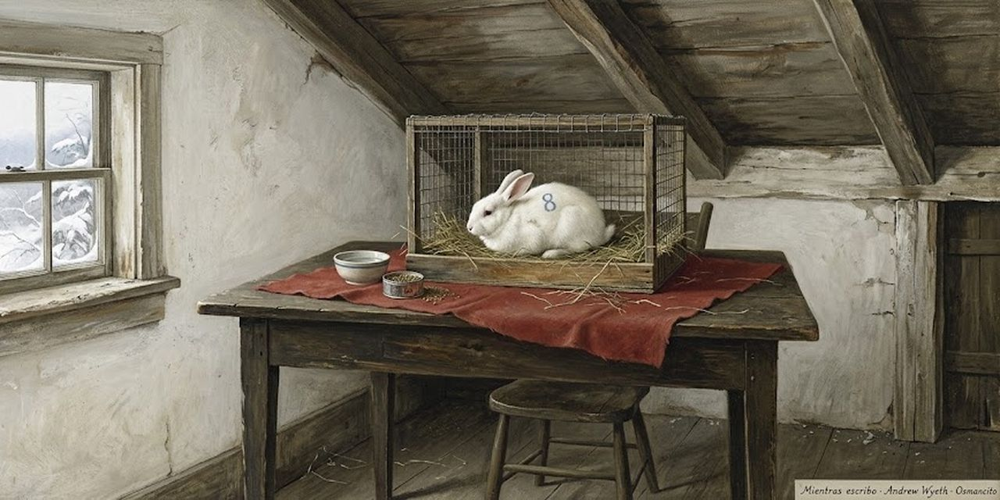

17 de octubre de 2026
Mientras escribo

Stephen King
En el año 2000, Stephen King publicó On Writing («mientras escribo»), un libro raro: mitad memoria de cómo se hizo escritor, mitad manual del oficio. El libro entero, destilado unidad a unidad; la página crece con cada entrega.
El destilado se lee en unas veintidós páginas.
Osmancito buscó las mejores frases del libro y, con Instinct, les dio una nueva forma.
Prólogos
A comienzos de los noventa, King entró en una banda de rock compuesta sobre todo por escritores, los Rock Bottom Remainders: Dave Barry, Ridley Pearson, Barbara Kingsolver, Amy Tan y él mismo a la guitarra rítmica. Una noche, cenando comida china antes de un bolo en Miami Beach, le preguntó a Amy Tan cuál era la pregunta que nadie le hacía nunca en la ronda de preguntas de cada charla de escritor. Ella lo pensó con cuidado y respondió: «nadie pregunta nunca por el lenguaje». A los DeLillo, a los Updike, a los Styron sí les preguntan; a los novelistas populares, no:
Yet many of us proles also care about the language, in our humble way, and care passionately about the art and craft of telling stories on paper.
Sin embargo, muchos de nosotros, los plebeyos, también nos preocupamos por el lenguaje, a nuestro modo humilde, y nos apasionan el arte y el oficio de contar historias en papel.
«Plebeyos»: King usa la palabra de 1984, de George Orwell, para los escritores de éxito popular, a los que la crítica no toma en serio. Él mismo dudó antes de escribir este libro: el coronel Sanders vendió un montón de pollo frito, y nadie quiere saber cómo lo hacía. Hacía falta una razón mejor que el éxito:
Put another way, I didn’t want to write a book, even a short one like this, that would leave me feeling like either a literary gas-bag or a transcendental asshole.
Dicho de otro modo, no quería escribir un libro, ni siquiera uno breve como este, que me dejara sintiéndome un charlatán de letras o un idiota en estado puro.
De esos libros, y de esos escritores, ya hay bastantes en el mercado. Así que éste sale corto por principio: cuanto más corto, menos tonterías; la excepción honrosa es The Elements of Style, de Strunk y White, el manualito que todo aspirante a escritor debería leer. La confesión de método:
Fiction writers, present company included, don’t understand very much about what they do—not why it works when it’s good, not why it doesn’t when it’s bad.
Los escritores de ficción, el que habla incluido, no entienden muy bien lo que hacen: ni por qué funciona cuando sale bien, ni por qué no cuando sale mal.
Queda la declaración de propósitos, que es también el índice del libro:
What follows is an attempt to put down, briefly and simply, how I came to the craft, what I know about it now, and how it’s done.
Lo que sigue es un intento de poner por escrito, de forma breve y sencilla, cómo llegué al oficio, qué sé de él ahora y cómo se hace.
Del segundo prólogo sale la ley de la carretera: «escribir es humano, editar es divino». Y la dedicatoria final es para Chuck Verrill, su editor de tantas novelas: «como siempre, Chuck, fuiste divino».
C.V.
El paisaje con niebla
King se quedó pasmado con The Liars' Club, las memorias de Mary Karr: no solo por su ferocidad y su belleza, sino por su totalidad, porque ella lo recuerda todo de su infancia. Él no. El suyo es un paisaje con niebla del que asoman recuerdos como árboles aislados, de los que parecen querer agarrarte y comerte. Lo que sigue no es una autobiografía, advierte, sino una especie de curriculum vitae: el intento de mostrar cómo se formó un escritor:
Not how one writer was made; I don’t believe writers can be made, either by circumstances or by self-will (although I did believe those things once).
No cómo se fabrica un escritor; no creo que los escritores puedan fabricarse, ni por las circunstancias ni por la propia voluntad (aunque una vez creí esas cosas).
El equipo viene con el paquete original, dice: el talento no es raro, mucha gente tiene algo, y se puede afilar; si no lo creyera, escribir este libro sería perder el tiempo. Y pide no buscar líneas entre líneas: no hay líneas, solo instantáneas, la mayoría desenfocadas:
This is how it was for me, that’s all—a disjointed growth process in which ambition, desire, luck, and a little talent all played a part.
Así fue para mí, eso es todo: un proceso de crecimiento desordenado en el que la ambición, el deseo, la suerte y un poco de talento jugaron su papel.
El hombre fuerte del circo
Su primer recuerdo es de imaginación pura: a los dos años y medio, en casa de sus tíos Ethelyn y Oren, en Durham, Maine, el niño King era el Hombre Fuerte del circo Ringling Brothers, el circo más famoso de Estados Unidos. Había encontrado un bloque de cemento en un rincón del garaje y había conseguido levantarlo:
I carried it slowly across the garage’s smooth cement floor, except in my mind I was dressed in an animal skin singlet (probably a leopard skin) and carrying the cinderblock across the center ring.
Lo llevé despacio por el suelo liso de cemento del garaje, salvo que en mi mente iba vestido con una malla de piel de animal (probablemente de leopardo) y cargaba el bloque por la pista central.
El público en silencio, el foco azul y blanco, la hazaña: «y solo tiene dos años», murmuraba alguien. Lo que él no sabía: unas avispas habían hecho un nido en la mitad de abajo del bloque. Una salió y le picó en la oreja, un dolor brillante, como una inspiración venenosa. Fue el peor dolor de su corta vida durante unos segundos: cuando el bloque le cayó sobre el pie descalzo y le machacó los cinco dedos, se olvidó por completo de la avispa. Su tía lo recuerda bien: «Cómo aullabas, Stephen. Ese día sí que estabas en plena voz».
Eula-Beulah
Un año después, madre e hijos en West De Pere, Wisconsin; King no sabe por qué. Hubo una ristra de niñeras, y de todas solo recuerda con claridad a una: Eula, o quizá Beulah. Era adolescente, grande como una casa, y se reía mucho:
Eula-Beulah had a wonderful sense of humor, even at four I could recognize that, but it was a dangerous sense of humor—there seemed to be a potential thunderclap hidden inside each hand-patting, butt-rocking, head-tossing outburst of glee.
Eula-Beulah tenía un sentido del humor maravilloso; incluso a los cuatro años yo sabía reconocerlo, pero era un sentido del humor peligroso: parecía haber un trueno en potencia escondido dentro de cada arranque de risa con palmaditas, balanceo de caderas y cabeza echada atrás.
Eula-Beulah era propensa a los gases, de los ruidosos y los apestosos: lo tumbaba en el sofá, le plantaba el trasero enfundado en lana sobre la cara y se soltaba, gritando «¡Pow!» de pura alegría. Como ser enterrado en fuegos artificiales de gas de pantano. Horrible y divertido a la vez. «En muchos sentidos», escribe King, «Eula-Beulah me preparó para la crítica literaria»: después de que una niñera de cien kilos se te eche un gas en la cara gritando «Pow!», The Village Voice, el semanario neoyorquino de la crítica cultural, da poco miedo. La despidieron por culpa de los huevos. Una mañana le frió un huevo, y él pidió otro, y otro, con la mirada de ella clavada: «no te atrevas a comerte otro, Stevie»:
I stopped after seven, I think—seven is the number that sticks in my mind, and quite clearly.
Paré después de siete, creo; siete es el número que se me quedó grabado, y con toda claridad.
Siete huevos son muchos para un niño de cuatro años. Se sintió bien un rato y luego lo dejó todo en el suelo; Eula-Beulah rio, le cruzó la cara y lo encerró en el armario. Si lo hubiera encerrado en el baño, habría salvado el empleo. A él el armario no le molestaba:
It was dark, but it smelled of my mother’s Coty perfume, and there was a comforting line of light under the door.
Estaba oscuro, pero olía al perfume Coty de mi madre, y bajo la puerta entraba una línea de luz reconfortante.
Se arrastró hasta el fondo, entre los abrigos, y empezó a eructar, eructos largos que quemaban como fuego, hasta que abrió la boca para soltar otro y en su lugar vomitó de nuevo: sobre los zapatos de su madre. Cuando ella volvió del trabajo, la niñera dormía en el sofá y el pequeño Stevie seguía encerrado, dormido, con restos de huevo frito a medio digerir secándose en el pelo.
El tejado
La estancia en West De Pere no fue larga ni exitosa: los echaron del apartamento del tercer piso cuando una vecina vio al hermano de King, de seis años, gateando por el tejado, y llamó a la policía. Él no sabe dónde estaba su madre, ni la niñera de turno:
I only know that I was in the bathroom, standing with my bare feet on the heater, watching to see if my brother would fall off the roof or make it back into the bathroom okay.
Solo sé que yo estaba en el baño, de pie con los pies descalzos sobre el radiador, mirando a ver si mi hermano se caía del tejado o volvía entero al baño.
Volvió entero. Ahora tiene cincuenta y cinco años y vive en New Hampshire.
Ver morir
A los cinco o seis años, King le preguntó a su madre si había visto morir a alguien. Sí, dijo ella: a una persona la había visto morir y a otra la había oído. La que oyó fue una muchacha que se ahogó frente a Prout's Neck en los años veinte: nadó más allá de la resaca, la corriente que devuelve al mar, y no pudo volver. Los hombres que intentaron alcanzarla se vieron rechazados por la corriente, y turistas y lugareños solo pudieron quedarse escuchando sus gritos hasta que se le acabaron las fuerzas. Tenía catorce años. Luego su madre le leyó un tebeo y lo mandó a la cama:
On some other day she told me about the one she saw—a sailor who jumped off the roof of the Graymore Hotel in Portland, Maine, and landed in the street.
Otro día me contó la que vio: un marinero que saltó del tejado del hotel Graymore de Portland, Maine, y cayó en la calle.
«Se estampó», dijo su madre con su tono más práctico, y añadió: «Lo que salió de él era verde. Nunca lo he olvidado». Y King cierra: «Ya somos dos, mamá».
Esto no va a doler
De los nueve meses que debía pasar en primer grado, King pasó la mayoría en la cama. Empezó con un sarampión corriente y siguió a peor: anginas una tras otra (él creía que se decía «garganta a rayas» y la imaginaba en franjas rojas y blancas), hasta que un día el asunto le llegó a los oídos y su madre pidió un taxi —ella no manejaba— para llevarlo a un especialista demasiado importante para hacer visitas a domicilio. Cuarenta grados de fiebre; cada vez que tragaba, el dolor le encendía los lados de la cara como una máquina de discos. La enfermera le puso bajo la cabeza un paño absorbente —pudo haber sido un pañal— y tendría que haber sospechado algo. Olor a alcohol, el traqueteo del esterilizador, una aguja larga como la regla de su cartuchera:
The ear doctor smiled reassuringly and spoke the lie for which doctors should be immediately jailed (time of incarceration to be doubled when the lie is told to a child): “Relax, Stevie, this won’t hurt.”
El otorrino sonrió con tranquilidad y dijo la mentira por la que los médicos deberían ir directos a la cárcel (con la condena doblada cuando la mentira se le dice a un niño): «Relájate, Stevie, esto no va a doler».
Le creyó. La aguja le atravesó el tímpano y el dolor fue más allá del mundo; salió líquido caliente, como si llorara por el agujero equivocado. «Fuiste muy valiente, Stevie, y ya pasó todo». Pasó todo tres veces: la semana siguiente otro taxi, la misma mentira, y él volvió a creerla, no del todo, pero lo suficiente para quedarse quieto. Sí que dolió, casi igual que la primera:
The smooching sound in my head was louder, too; this time it was giants kissing (“suckin’ face and rotatin’ tongues,” as we used to say).
El sonido de besos dentro de mi cabeza también fue más fuerte; esta vez eran gigantes besándose («comiéndose la boca y enroscando lenguas», como decíamos entonces).
A la tercera, el taxista amenazó con parar y dejarlos si su madre no hacía callar a ese niño. Desde aquellas punciones repetidas a los seis años, uno de los principios más firmes de su vida: «Engáñame una vez, culpa tuya; engáñame dos, culpa mía; engáñame tres, culpa de los dos». La tercera vez forcejeó, gritó y apartó la aguja a manotazos hasta que la enfermera llamó a su madre y entre las dos lo sujetaron. Gritó tan fuerte y tanto tiempo que todavía lo oye: en algún valle profundo de su cabeza, aquel último grito sigue resonando.
El helado prometido
En un mes frío y gris poco después —enero o febrero de 1954— volvió el taxi, esta vez al médico de la garganta:
Once again my mother sat in the waiting room, once again I sat on the examining table with a nurse hovering nearby, and once again there was that sharp smell of alcohol, an aroma that still has the power to double my heartbeat in the space of five seconds.
Una vez más mi madre se sentó en la sala de espera, una vez más yo me senté en la mesa de exploración con una enfermera revoloteando cerca, y una vez más estaba ese olor fuerte a alcohol, un aroma que todavía tiene el poder de doblarme los latidos en cinco segundos.
Esta vez solo apareció un hisopo: picaba y sabía horrible, pero después de la aguja larga del oído era un paseo por el parque. El médico se puso un aparato con un espejo en medio y una luz fiera como un tercer ojo:
He looked down my gullet for a long time, urging me to open wider until my jaws creaked, but he did not put needles into me and so I loved him.
Me miró garganta abajo durante un buen rato, pidiéndome que abriera más hasta que me crujían las mandíbulas, pero no me clavó agujas, y por eso lo quise.
El diagnóstico: las amígdalas. «Parece que las hubiera arañado un gato. Habrá que sacarlas». Lo último que recuerda es un hombre con mascarilla blanca inclinado sobre él, cabeza abajo desde su camilla —1953 y 1954 fueron sus años de estar tumbado en mesas—: «Cuando despiertes, podrás comer todo el helado que quieras». Al despertar, en efecto, le permitieron todo el helado que quisiera, una broma excelente, porque no quería nada. Pero mejor que el viejo truco de la aguja en el oído: «Quítenme las amígdalas si hace falta, pónganme una jaula de acero en la pierna si es preciso, pero Dios me libre del otiólogo».
Escribe una tuya
Aquél año su hermano David saltó a cuarto grado y a King lo sacaron del colegio del todo: había perdido demasiado de primero. Entre la cama y la casa se leyó unas seis toneladas de tebeos, pasó a Tom Swift y a Jack London, y en algún momento empezó a escribir sus propias historias. La imitación precedió a la creación: copiaba tebeos de Combat Casey palabra por palabra en su cuaderno, añadiendo a veces descripciones propias:
“They were camped in a big dratty farmhouse room,” I might write; it was another year or two before I discovered that drat and draft were different words.
«They were camped in a big dratty farmhouse room», podía escribir yo; tardé todavía un año o dos en descubrir que drat y draft eran palabras distintas.
O sea: quería decir «con corrientes de aire» (drafty) y escribía «maldita» (dratty). Por la misma época creía que details («detalles») eran dentals («dentales») y que una bitch era una mujer extremadamente alta: un son of a bitch venía a ser un jugador de baloncesto. Cuando se tienen seis años, la mayoría de las bolas del bingo todavía flotan en el bombo. Un día le enseñó a su madre uno de esos híbridos copiados:
Eventually I showed one of these copycat hybrids to my mother, and she was charmed—I remember her slightly amazed smile, as if she was unable to believe a kid of hers could be so smart—practically a damned prodigy, for God’s sake.
Quedó encantada: recuerdo su sonrisa levemente asombrada, como si no pudiera creer que un hijo suyo fuera tan listo; prácticamente un maldito prodigio, por el amor de Dios.
Nunca le había visto esa cara, al menos no por él, y le encantó. Pero tuvo que admitir que había copiado casi todo de un tebeo, y la decepción de ella le aguó buena parte del gusto. Al final le devolvió el cuaderno: «Escribe una tuya, Stevie. Esos tebeos de Combat Casey son pura porquería; siempre le está rompiendo los dientes a alguien. Apuesto a que tú puedes hacerlo mejor. Escribe una tuya».
Mr. Rabbit Trick
La idea le produjo una inmensa sensación de posibilidad, como si lo hubieran dejado entrar en un edificio enorme lleno de puertas cerradas con permiso para abrir las que quisiera. Escribió una historia de cuatro animales mágicos que recorrían el mundo en un carro viejo ayudando a niños pequeños; el jefe era un conejo blanco y grande llamado Mr. Rabbit Trick, y el que manejaba. Cuatro páginas, impresas a lápiz con esfuerzo. Nadie saltaba del tejado del Graymore:
When I finished, I gave it to my mother, who sat down in the living room, put her pocketbook on the floor beside her, and read it all at once.
Cuando lo terminé, se lo di a mi madre, que se sentó en la sala, puso el bolso en el suelo a su lado y lo leyó de una sentada.
I could tell she liked it—she laughed in all the right places—but I couldn’t tell if that was because she liked me and wanted me to feel good or because it really was good.
Yo notaba que le gustaba (se reía en los sitios correctos), pero no sabía si era porque me quería y quería hacerme sentir bien o porque de verdad era bueno.
«¿Ésta no la copiaste?». No. Dijo que era lo bastante buena para estar en un libro, y nada de lo que nadie le ha dicho desde entonces lo ha hecho más feliz. Escribió cuatro historias más de Mr. Rabbit Trick; su madre le pagó un cuarto de dólar por cada una y las mandó a sus cuatro hermanas, que la compadecían un poco —ellas seguían casadas, sus hombres no se habían largado—: quería que vieran que, al menos, su bebé tenía talento. Cuatro historias, un cuarto cada una: «Ese fue el primer dólar que gané en este oficio».
La jungla
Mudanza a Stratford, Connecticut: segundo grado y un amor de piedra por la muchacha guapa de al lado:
She never looked twice at me in the daytime, but at night, as I lay in bed and drifted toward sleep, we ran away from the cruel world of reality again and again.
Ella no me miraba dos veces durante el día, pero por la noche, mientras yo me quedaba dormido en la cama, huíamos juntos del cruel mundo de la realidad una y otra vez.
La maestra nueva, la señora Taylor, tenía el pelo gris de Elsa Lanchester en La novia de Frankenstein y los ojos saltones. Y a una cuadra cuesta abajo se extendía un enorme terreno enmarañado con un deshuesadero al fondo y una vía de tren en medio, uno de esos lugares a los que King vuelve siempre en la imaginación: los chicos de It lo llamaban los Barrens; ellos lo llamaban la jungla. Explorándola con Dave el primer verano, a King le entró una necesidad urgente de mover el vientre. «Llévame a casa, tengo que empujar». A Dave no le iba a arruinar media hora de tarde brillante por eso: «Hazlo en el monte. Límpiate con hojas, como hacían los vaqueros y los indios». La idea de hacerlo como un vaquero lo conquistó:
I pretended I was Hopalong Cassidy, squatting in the underbrush with my gun drawn, not to be caught unawares even at such a personal moment.
Me imaginé que era Hopalong Cassidy, en cuclillas en la maleza con la pistola desenfundada, decidido a que no me pillaran desprevenido ni en un momento tan personal.
Hopalong Cassidy: el vaquero más limpio del cine y la tele de los cincuenta. Las hojas verdes y brillantes resultaron ser hiedra venenosa. Dos días después estaba rojo vivo de las corvas a los omóplatos; los testículos se le pusieron como semáforos, y lo peor fue la mano con que se limpió, hinchada como la de Mickey Mouse después de un martillazo del pato Donald, con ampollas gigantes entre los dedos que al reventar dejaron hoyos de carne viva:
For six weeks I sat in lukewarm starch baths, feeling miserable and humiliated and stupid, listening through the open door as my mother and brother laughed and listened to Peter Tripp’s countdown on the radio and played Crazy Eights.
Durante seis semanas me senté en baños tibios de almidón, sintiéndome miserable, humillado y estúpido, oyendo a través de la puerta abierta cómo mi madre y mi hermano se reían, escuchaban la cuenta atrás de Peter Tripp en la radio y jugaban a las cartas.
El electroimán de Dave
Dave era un hermano estupendo, pero demasiado listo para un niño de diez años: sus sesos siempre lo metían en líos, y aprendió pronto que el hermanito Stevie podía acompañarlo en la primera línea cuando se avecinaba tormenta:
Dave never asked me to shoulder all the blame for his often brilliant fuck-ups—he was neither a sneak nor a coward—but on several occasions I was asked to share it.
Dave nunca me pidió que cargara con toda la culpa de sus meteduras de pata, a menudo brillantes (no era ni un rastrero ni un cobarde), pero en varias ocasiones se me pidió compartirla.
Así que los dos se buscaron el lío cuando Dave represó el arroyo de la jungla e inundó buena parte de West Broad Street, y los dos corrieron riesgo de morir con su proyecto de feria de ciencias de 1958: el Súper Electroimán de Dave. Nada de dibujos de ranas ni casas del futuro con rollos de papel higiénico: Dave apuntaba a las estrellas. El primer intento no fue muy súper que digamos —salió de un libro de verdad: imantar un clavo frotándolo con un imán y reforzarlo con un hilo de cobre y una pila—, pero Dave no quería levantar limaduras de hierro; Dave quería levantar Buicks, vagones de tren, quizá aviones de transporte del ejército. La nueva versión prescindió de la pila vieja y se conectó directamente a la corriente de la pared, con el cable pelado de una lámpara rescatada de la basura. El papel de Dave era construirlo; el de King, probarlo: el Chuck Yeager de Stratford:
Then, sitting on the floor in the kitchen of our West Broad Street apartment, he offered me the Super Duper Electromagnet and bade me do my part and plug it in.
Entonces, sentado en el suelo de la cocina de nuestro apartamento de West Broad Street, me ofreció el Súper Electroimán y me instó a hacer mi parte: enchufarlo.
Dudó —que conste—, pero el entusiasmo maníaco de Dave era demasiado. Lo enchufó. No hubo magnetismo apreciable, pero el aparato fundió todas las luces y electrodomésticos del apartamento, del edificio y del edificio de al lado, donde vivía su chica soñada. Algo estalló en el transformador y vinieron policías:
Dave and I spent a horrible hour watching from our mother’s bedroom window, the only one that looked out on the street (all the others had a good view of the grassless, turd-studded yard behind us, where the only living thing was a mangy canine named Roop-Roop).
Dave y yo pasamos una hora horrible mirando desde la ventana del cuarto de nuestra madre, la única que daba a la calle (las demás tenían una buena vista del patio trasero, sin hierba y sembrado de cacas, donde el único ser vivo era un perro sarnoso llamado Roop-Roop).
Ese día solo cabía preguntarse si su madre iría a visitarlos al reformatorio. Al final las luces volvieron, no los descubrieron, y Dave decidió que quizá construiría un Súper Planeador en vez de un Súper Electroimán. King, le informó, haría el primer vuelo. ¿No sería estupendo?
La tele
King nació en 1947 y en casa no hubo televisor hasta 1958. Lo primero que recuerda haber visto es Robot Monster: un tipo disfrazado de mono con una pecera en la cabeza intentando matar a los últimos supervivientes de una guerra nuclear. Le pareció arte de muy alta naturaleza. Había todo un mundo de aventura ajenas empaquetado en blanco y negro, catorce pulgadas, patrocinado por marcas que todavía le suenan a poesía. Lo amó todo, pero la tele llegó tarde a casa de los King, y se alegra: pertenece al grupo selecto de los últimos novelistas americanos que aprendieron a leer y escribir antes de aprender a tragarse la ración diaria de tonterías en vídeo. Y de ahí, un consejo práctico:
On the other hand, if you’re just starting out as a writer, you could do worse than strip your television’s electric plug-wire, wrap a spike around it, and then stick it back into the wall.
Por otro lado, si estás empezando como escritor, no hay nada malo en pelar el cable del enchufe de tu televisor, enrollarle un clavo y volver a meterlo en la pared.
«A ver qué salta, y hasta dónde. Solo una idea».
El Ackermonster
A finales de los cincuenta, Forrest J. Ackerman, agente literario y coleccionista compulsivo de memorabilia de ciencia ficción, cambió la vida de miles de niños —King fue uno— con su revista Famous Monsters of Filmland. Hacia 1960, King mandó un cuento a Spacemen, su revista hermana: el primero que enviaba a publicar, muy deudor del mono asesino con pecera de Robot Monster. Se lo rechazaron, pero Forry se lo quedó (Forry lo guarda todo, como sabe cualquiera que haya visitado su casa, la Ackermansión):
About twenty years later, while I was signing autographs at a Los Angeles bookstore, Forry turned up in line … with my story, single-spaced and typed with the long-vanished Royal typewriter my mom gave me for Christmas the year I was eleven.
Unos veinte años después, mientras yo firmaba autógrafos en una librería de Los Ángeles, apareció Forry en la cola... con mi cuento, a un solo espacio y mecanografiado con la Royal desaparecida hacía años que mi madre me había regalado la Navidad de mis once años.
Quería que se lo firmara, y King cree que lo hizo, aunque el encuentro fue tan surrealista que no puede jurarlo. «Hablando de fantasmas. Madre mía».
Profanador de tumbas adolescente
El primer cuento que publicó de verdad salió en un fanzine de terror de Mike Garrett, de Birmingham, Alabama:
He published this novella under the title “In a Half-World of Terror,” but I still like my title much better.
Publicó la novelita con el título «In a Half-World of Terror», pero el mío me sigue gustando mucho más.
El suyo era «I Was a Teen-Age Grave-robber»: yo fui un profanador de tumbas adolescente. «Súper. ¡Pow!».
Durham
De vuelta a Maine, llega el recuerdo que ordena la memoria: la primera idea propia de un cuento.
My first really original story idea—you always know the first one, I think—came near the end of Ike’s eight-year reign of benignity.
Mi primera idea realmente original para un cuento (la primera siempre se reconoce, creo) llegó cerca del final de los ocho años de reinado benévolo de Ike.
Ike: el presidente Eisenhower. La familia se había vuelto a Maine para que su madre cuidara de sus padres ancianos: Mama, unos ochenta años, obesa, hipertensa y casi ciega; Daddy Guy —su madre lo llamaba «Fazza»—, ochenta y dos, flaco, hosco y propenso a arranques a lo pato Donald que solo ella entendía:
I was sitting at the kitchen table of our house in Durham, Maine, and watching my mother stick sheets of S&H Green Stamps into a book.
Estaba sentado a la mesa de la cocina de nuestra casa de Durham, Maine, mirando a mi madre pegar hojas de cupones S&H Green Stamps en una libreta.
Los Green Stamps eran cupones de compra que se cambiaban por mercancía; para más historias sabrosas sobre ellos, remite a The Liars' Club. Las hermanas le habían conseguido a su madre aquel arreglo pensando quizá en matar dos pájaros de un tiro: los viejos cuidados en casa por una hija amorosa, y resuelto El Problema Fastidioso de Ruth. Pero King cree que ella odiaba aquel trabajo: de mujer autosuficiente, graciosa y un poco loca pasó a una especie de aparcera con existencia casi sin dinero. La casa era de los tíos Ethelyn y Oren; una vez allí, quedó atrapada. Consiguió otro trabajo de verdad cuando los viejos murieron, pero vivió en esa casa hasta que la alcanzó el cáncer, y cuando salió de Durham por última vez, King intuye que probablemente estaba más que lista para irse.
What Writing Is
«Telepatía, por supuesto», abre King: todas las artes dependen de ella y la escritura es su destilación más pura. Lleva siglos a la vista, como la carta del cuento de Edgar Allan Poe, que toda la policía busca mientras cuelga de un tarjetero. J. B. Rhine dedicó su vida a buscarla en un laboratorio:
It’s amusing when you stop to think about it—for years people have argued about whether or not such a thing exists, folks like J. B. Rhine have busted their brains trying to create a valid testing process to isolate it, and all the time it’s been right there, lying out in the open like Mr. Poe’s Purloined Letter.
Da risa pensarlo: durante años la gente ha discutido si tal cosa existe o no; gente como J. B. Rhine se ha roto la cabeza tratando de crear un proceso de prueba válido para aislarla, y todo ese tiempo ha estado ahí, a la vista de todos, como la carta robada del señor Poe.
Toda telepatía tiene un emisor y un receptor. King da sus coordenadas:
I’m writing the first draft of this part at my desk (the one under the eave) on a snowy morning in December of 1997.
Estoy escribiendo el primer borrador de esta parte en mi escritorio (el que está bajo el alero), una mañana nevada de diciembre de 1997.
El alero es la parte del tejado que sobresale de la pared: King escribe en la buhardilla. El lector es el receptor, río abajo en el tiempo; no hace falta compartir el año: todavía leemos a Dickens y a Shakespeare.
¿Desde dónde transmite? Desde un sitio para ver lejos que, contradicción suya, queda en un sótano de luces brillantes. Entonces hace el truco: manda por el aire una mesa con mantel rojo, una jaula, un conejo blanco que muerde un resto de zanahoria y un ocho azul en el lomo. El lector lo recibe todo, sobre todo el ocho, sin abrir la boca ni compartir año: telepatía de verdad. Fíjese en lo que la descripción no dijo:
The paragraph also doesn’t tell us what sort of material the cage is made of—wire mesh? steel rods? glass?—but does it really matter?
El párrafo tampoco nos dice de qué material está hecha la jaula (¿malla de alambre?, ¿barras de acero?, ¿vidrio?), pero ¿de veras importa?
No importa: todos entendemos que la jaula se ve a través. Dar las medidas exactas sería escribir un manual de instrucciones, no prosa.
La demostración tiene su moraleja: la seriedad. A la página en blanco se puede llegar de muchas maneras:
You can approach the act of writing with nervousness, excitement, hopefulness, or even despair—the sense that you can never completely put on the page what’s in your mind and heart.
Se puede llegar al acto de escribir con nerviosismo, con entusiasmo, con esperanza o incluso con desesperación: la sensación de que nunca se podrá pasar por completo a la página lo que hay en la mente y en el corazón.
De todas esas maneras se puede llegar, menos de una: «venga como venga, menos a la ligera; no debe acercarse a la página en blanco a la ligera». No es misa ni concurso de moral: es escribir. Si el lector lo toma en serio, hay trato; si no, que cierre el libro. «Lavar el carro, quizás».
Osmancito, con la asistencia de Instinct